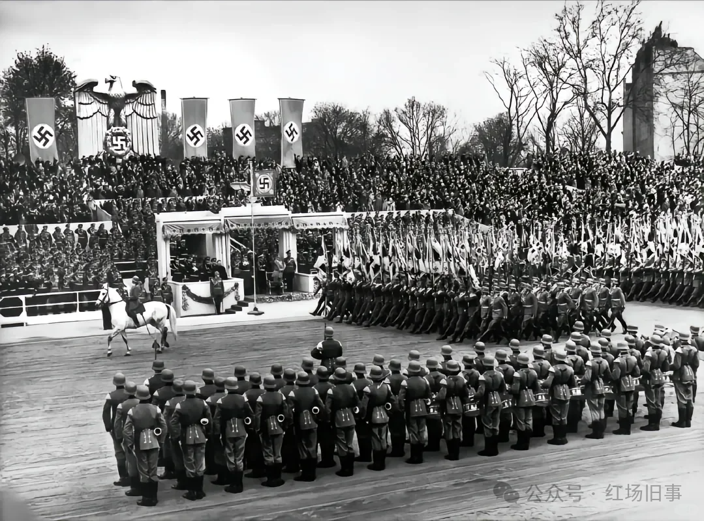
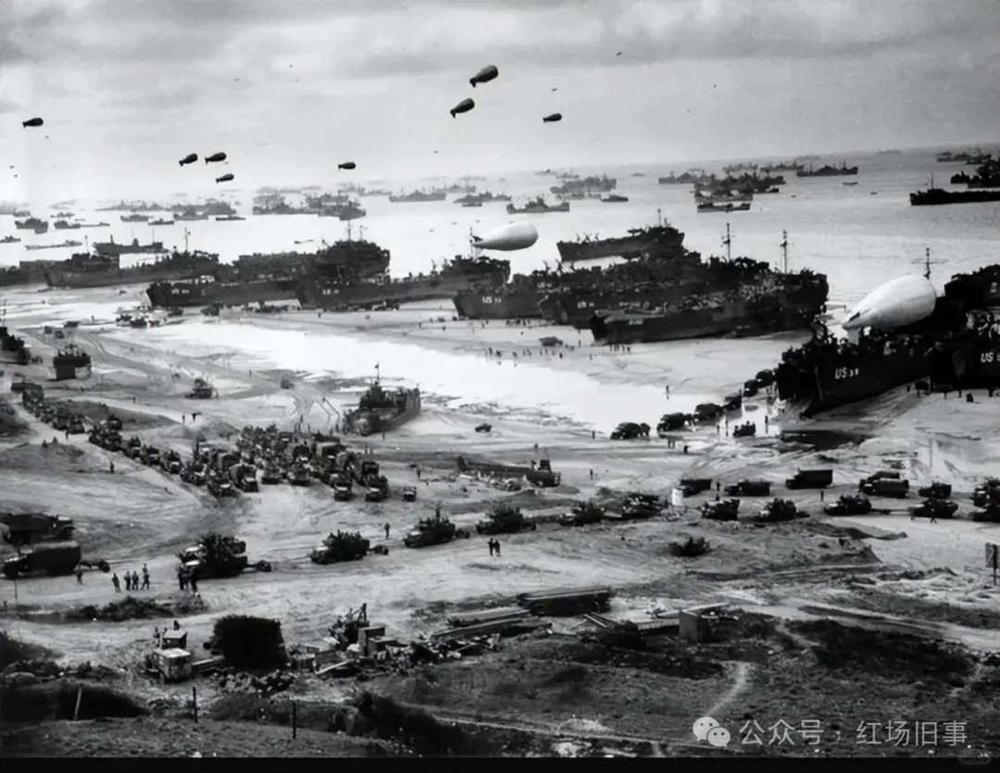
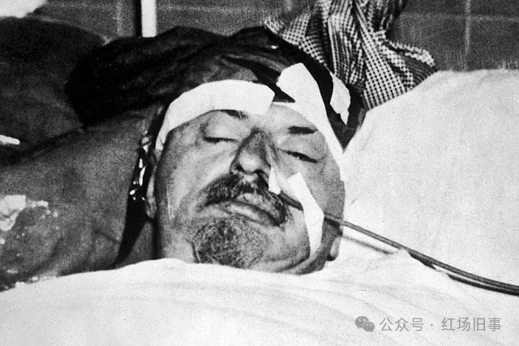

楔子：1939年布鲁塞尔的秘密电台1939年深秋，布鲁塞尔一处普通公寓里，一名年轻人正戴着耳机，手指在发报键上快速敲击。他叫约翰·文策尔，是德国共产党的老战士，此刻正将德军最新调动情报发往莫斯科。他不知道的是，几公里外的克朗茨监听站，纳粹无线电测向车正在缓缓逼近。三年后，正是他这台“乐器”，让整个情报网坠入深渊。这个情报网，被盖世太保起了个浪漫又致命的名字——“红色乐队”（Rote Kapelle）。在他们内部的语言里，间谍是“音乐家”，电台是“乐器”，而乐队指挥是一个叫特雷伯的波兰犹太人。这是一群普通人组成的间谍网。没有专业训练，没有外交豁免权，只有对纳粹的仇恨和对胜利的信念。他们穿透了第三帝国最严密的情报壁垒，也为此付出了最惨重的代价。
一、组建密码：犹太商人牵头的“草根间谍团”
1938年，战争的阴云笼罩欧洲。苏联军事情报局看中了一个人：利奥波德·特雷伯，波兰籍犹太人，共产党员，曾在巴勒斯坦组织过地下活动，在莫斯科受过专业情报训练。他的任务：在西欧建立一个庞大的情报网，为即将到来的战争做准备。特雷伯选择布鲁塞尔作为基地。他找到老朋友莱奥·格罗斯沃格尔——一个在比利时商界颇有声望的犹太实业家。两人合办了一家“国际优质雨衣公司”，表面做进出口生意，实则为情报活动提供资金和掩护。公司生意出奇的好，甚至与德国国防军做起了买卖。特雷伯后来回忆：“我们卖给德军制服、被褥，甚至漏底的油桶，生意做得越大，情报网就越安全。”“红色乐队”的成员来自五湖四海：德国共产党老战士文策尔负责发报，苏联军官马卡罗夫协助联络，法国抵抗运动成员包利奥尔传递情报，还有工程师、外交官、家庭主妇。他们共同的标签是：没有一个是专业间谍。到1940年，这个“草根间谍团”已经遍布法国、比利时、荷兰，成员超过120人。他们向莫斯科发送了海量情报：德军东线兵力部署、飞机产量、燃料运输——全是纳粹最核心的机密。
二、盖世太保围剿：170人被捕的惨烈过程
1941年6月，德军入侵苏联。克朗茨监听站发现，来自布鲁塞尔的无线电信号突然密集起来。三个月内，他们截获了250份无法破译的密码电报。

希特勒暴跳如雷，下令盖世太保全力追查。破绽出现在1941年11月。比利时一个发报点被无线电测向车锁定，报务员索菲当场被捕。盖世太保守株待兔，几天内又抓获多名接头人员。真正的灾难来自内部叛变。两名苏联派来的军官——苏库洛夫（化名肯特）和艾弗雷莫夫——被捕后很快招供。盖世太保顺藤摸瓜，1942年8月，柏林小组60人全部落网；11月，法国小组遭遇毁灭性打击。最惨烈的时刻是1942年11月24日。特雷伯按预约去牙医诊所看病，刚一进门，两条大汉从背后冲出：“举起手来！”盖世太保杰林得意地说：“我们追踪你已经两年了，凡是德国占领的地方都找遍了。”至此，“红色乐队”170多名成员被捕。其中绝大多数被处决，包括比利时贵族苏珊·斯帕克——她在巴黎解放前13天死于弗雷纳监狱。
三、双重骗局：“大赌博”的惊天逆转
特雷伯被捕后，纳粹如获至宝。盖世太保头子缪勒提出一个大胆计划：策反特雷伯等人，以“红色乐队”名义向莫斯科发送假情报，挑拨苏英关系，瓦解反法西斯同盟。希特勒亲自批准，代号“大赌博”。特雷伯面临生死抉择。表面上他同意合作，暗地里却用极巧妙的方法写了一封密信，向莫斯科揭露真相。他与情报中心约定：如果同意搞“大赌博”，就在1943年2月23日（红军节兼特雷伯生日）发来贺电；如果不同意，继续发普通电报。1943年2月23日，莫斯科的贺电准时抵达。主动权转到了特雷伯手中。此后，一场惊心动魄的“双面游戏”上演。莫斯科一边对假情报表示“满意”，一边不断索要德军真实军情。盖世太保为了取信莫斯科，不得不把西线德军的真实情报——包括兵力部署、防御工事——源源不断发给苏联。这些情报最终转交英美，为1944年诺曼底登陆提供了巨大帮助。德军总参谋部发现后暴跳如雷，与盖世太保激烈冲突，但被纳粹高层压了下来。

诺曼底登陆
四、特雷伯逃生：从纳粹监狱到苏联牢房
1943年，形势日益危险。法共地下电台被破获，关键成员包利奥尔被捕，特雷伯面临暴露风险。他决定逃走。9月13日，负责监护他的盖世太保伯格因胃病发作，带特雷伯上街买药。在巴伊药店——一个有前后两个出口的地方——特雷伯趁伯格不备，消失在后门外的巴黎街头。纳粹的“大赌博”彻底破产。特雷伯在法国地下抵抗组织的掩护下活到巴黎解放。1945年初，他满怀希望飞回莫斯科，等待他的却是卢比扬卡监狱的十年牢狱。斯大林对任何从西方回来的人都不信任。特雷伯还背负着“与盖世太保合作”的嫌疑——尽管他正是那个让“大赌博”反噬纳粹的人。1954年贝利亚被清算后，他才获释平反。
档案佐证：被质疑的英雄
德国联邦档案馆至今保存着“红色乐队案”的卷宗，记录着170多个名字和他们的结局。战后围绕特雷伯的争议从未停止：他是否真的“假意投靠”？是否为了保护自己出卖了同伴？1972年，法国前反间谍局长公开指控特雷伯叛变。特雷伯起诉并胜诉，法庭认定盖世太保档案不可采信，幸存战友纷纷出庭为他做证。1982年，特雷伯在耶路撒冷去世，享年77岁。葬在他魂牵梦绕的犹太故土。
延伸话题：平民的勇气
“红色乐队”最令人动容的，不是特雷伯的智谋，不是情报的价值，而是那些普通人的选择。他们本可以像大多数人一样，在战争中选择沉默、苟且、等待。但他们选择了发报、传递、死亡。苏珊·斯帕克，比利时贵族之女，本可安然度过战争，却在巴黎解放前13天走上刑场。柏林小组里，有教授、演员、作家，甚至86岁的老妇人和16岁的少年。他们没有专业训练，不懂谍战技巧，但他们懂得一件事：有些东西比生命更值得守护。
互动推理
“红色乐队”170多名成员，最终只有77人活到战后。特雷伯活了77岁，却在纳粹监狱和苏联牢房里度过了近十年。你认为，特雷伯是英雄还是投机者？他假意投靠盖世太保的行为，是智谋还是妥协？欢迎在评论区分享你的推理。
下一期预告：刺杀托洛茨基——斯大林的长臂管辖
1929年，托洛茨基被逐出苏联。此后11年，他辗转土耳其、法国、挪威，最后落脚墨西哥。但无论逃到哪里，斯大林的杀手始终尾随。1940年8月20日，一个名叫“杰克逊”的人走进他的书房，从雨衣下抽出一把冰斧……

杀手如何在托洛茨基身边潜伏数月？内务部暗杀档案何时解密？那场改变世界革命史的一击，还有多少未解之谜？下一期，走进墨西哥城科约阿坎区的蓝色小屋，还原那场跨越二十年的追杀令。